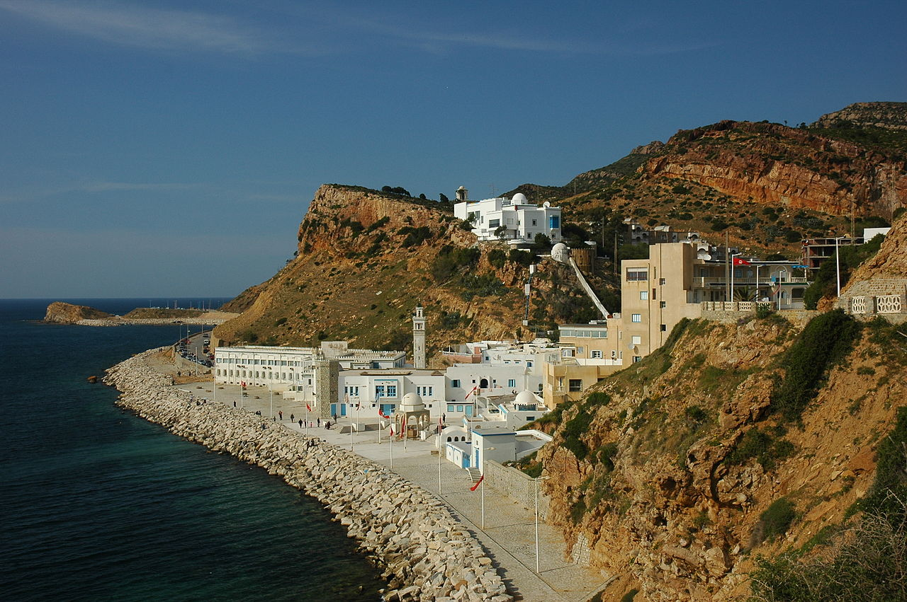
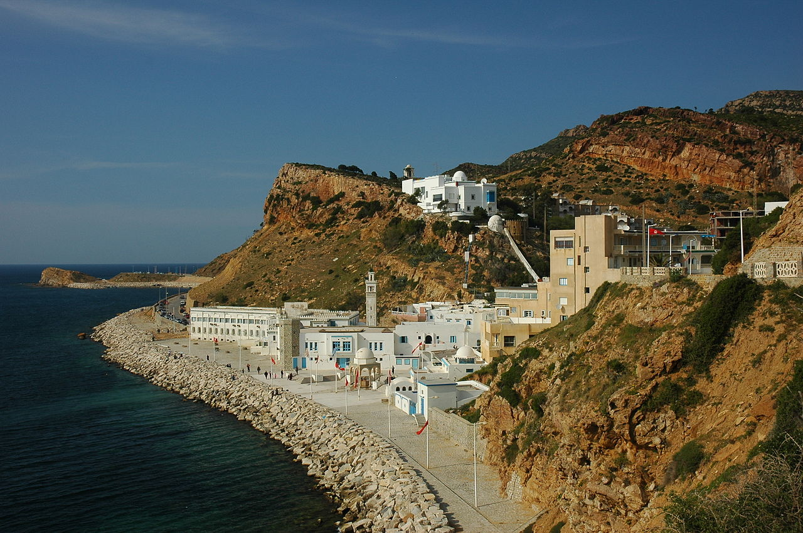

Chef-lieu du gouvernorat du même nom, elle constitue une municipalité comptant 70 437 habitants en 2014. En associant les villes voisines de Dar Chaâbane, Béni Khiar et El Maâmoura, elle forme une agglomération. Avec Hammamet, elle forme une conurbation bipolaire. Située dans la région du cap Bon, qui constitue une péninsule s'enfonçant dans la mer Méditerranée, Nabeul est située au centre de son flanc sud-est, non loin de la ville d'Hammamet, et constitue l'une des plus importantes localités qui se succèdent le long de la côte du golfe d'Hammamet.

La ville a des origines très anciennes; dans le sud de la ville sont en fait les ruines de l'ancienne ville de Neapolis, fondée il y a environ 2400 ans, ce qui fait également référence à l'historien Thucydide dans leurs écrits, en se référant à quelques-uns des épisodes guerre du Péloponnèse la 413 BC. La ville passa ensuite sous la règle carthaginois avant et, depuis 148 BC, romain, conquis par le général Lucius Calpurnius Piso Cesonino. Au cours de la domination romaine, le centre passe dans l'arrière-plan, par la suite, après 476, d'abord sous la règle vandale puis sous celle de byzantin, qui a détruit avec l'arrivée des Arabes.

Nabeul est également connu pour son artisanat et sa production agricole: arbres, oranges et, en particulier, Chiles, utilisé, par l'intermédiaire du processus de séchage, pour la production de harissa.Nabeul est connu en Tunisie et à l'étranger pour la qualité extrême dans la production et la transformation poterie, en particulier pour ses assiettes peintes et en terre cuite.Nabeul est connu en Tunisie et à l'étranger pour la qualité extrême dans la production et la transformation poterie, en particulier pour ses assiettes peintes et en terre cuite.

 
